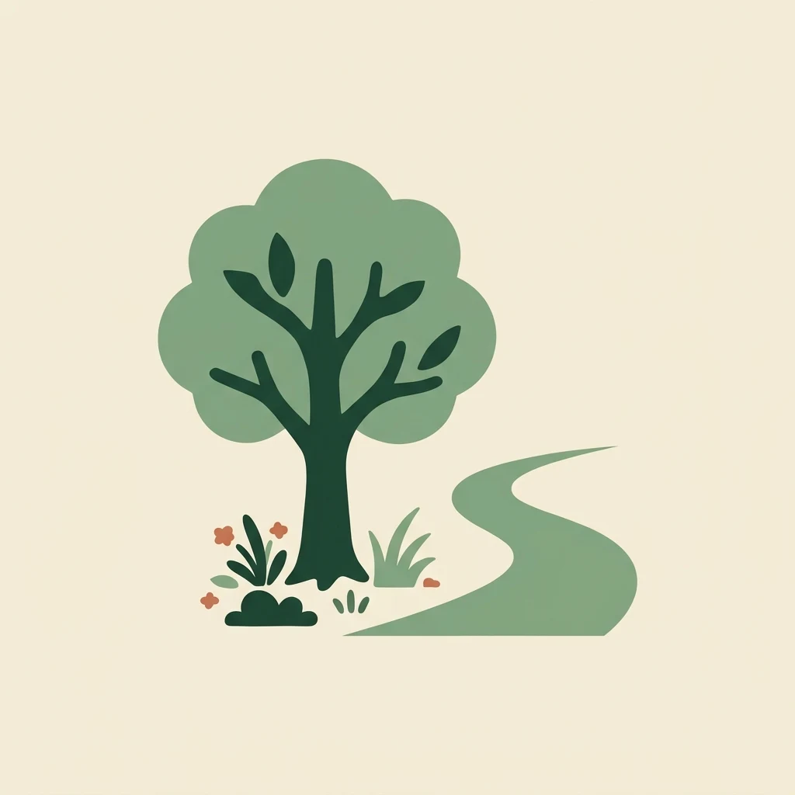

Orientación a la realidad
Espacio de diálogo sobre noticias, gestión del día a día y vínculo con el entorno cercano.
Actividades grupales para personas adultas con problemas de salud mental. Un espacio seguro para participar, potenciar habilidades y disfrutar del ocio en compañía.
Ver talleres
Espacio de diálogo sobre noticias, gestión del día a día y vínculo con el entorno cercano.

Dinámicas de lectura, escritura y expresión artística para entrenar la atención, la memoria y la comunicación.

Rutas al aire libre, baños de bosque y movimiento suave para reconectar con el entorno natural en grupo.